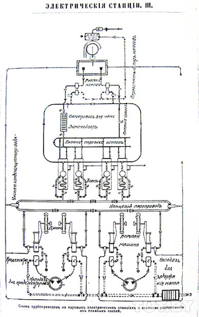
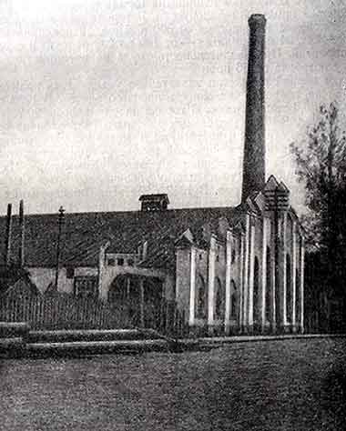
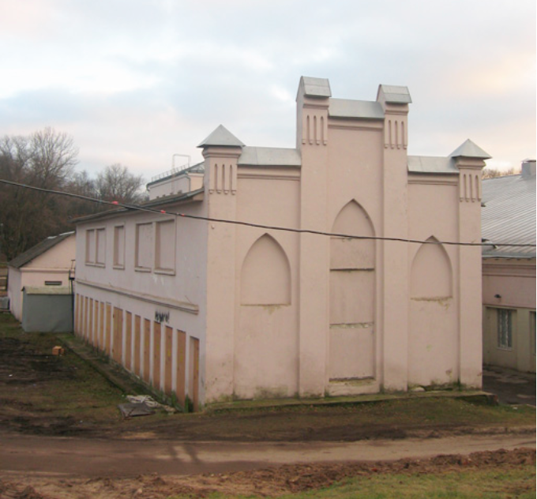
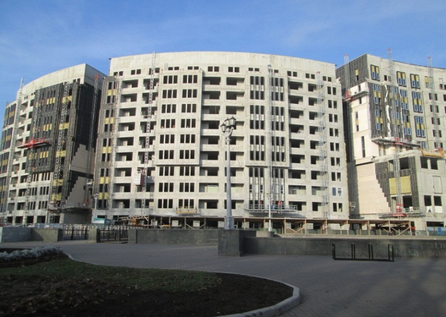

Minsk was one of the few cities of the Russian Empire where electricity was used for street lighting. The first experiments of electric lighting in Minsk were made by the technician Kobyak on December 21, 1886. The question of conducting electric lighting in the city arose in the Office in 1892. Two years later, inexpensive electrical equipment was purchased. And on January 12, 1895 on the right bank of the Svisloch, near the water pump station, a power plant began to operate, which provided the work of 390 incandescent bulbs for the consecration of streets (Petropavlovskaya, Preobrazhenskaya, Gubernatorskaya), summer and winter theaters, private buildings. Within three years there were 1,100 incandescent bulbs in the city. After 1905 the first electric lamps of the voltaic appeared, which were periodically lit in the theater, circus, at festivals. However, the outskirts of the city were mainly illuminated by gas lamps. But back in 1896 it turned out that the energy equipment purchased at an inexpensive cost almost exhausted its capacity. In 1897 and 1900 partial improvements were carried out, which, however, provided only a temporary effect. At the beginning of the century the power plant was in a state of crisis. The needs of consumers were not met, incomes decreased. For the sake of re-equipment of the city network, the authorities signed a contract with the all-Russian society «General Electricity Company». It took 151 thousand roubles, while a similar contract in Vilnius would cost 700 thousand roubles. Since February 1907 the electric power was used in the technical purposes. The power plant was significantly modernized in 1912: a new dynamo and the diesel engine with a capacity of 500 horsepower were installed, some of the overhead wires were replaced with underground cables. By 1913 the maximum power of the station reached 1100 kW, so it became the largest station in the territory of modern Belarus (out of the stations subordinated to the Minsk administrations). The cost of 1 kilowatt of electricity at the Minsk power plant in 1906-1913 was 4.8-8.3 kopecks, and sold it was sold for 27 kopecks. It was an enterprise with high and steady profits. From 1894 to 1912 its revenues were increased almost 16 times. [14, Pp. 127-130]
At the end of World War I the power plant supplied with energy all construction sites of the restoration of the modern Independence Avenue (from Independence Square to Victory Square).
As of 1926 the power station gave more than 3000 kW and provided electricity to the whole Minsk as well as many factories and plants. The station had the following workshops: plumbing, which repaired the water supply network, electric, which repaired low-and high-voltage networks; machine, which produced electricity; repair, which served the first three ones. Everyone could take a look at the station on Sundays from 13:00 p.m. to 15:00 p.m.
A narrow-gauge railway led the power station, where wagons loaded with peat ran without stopping. The traction of these trolleys was provided by small imperfect locomotives, the sparks of which often ignited wooden houses located along the route. Only within 5 months in 1935 there were five similar cases. The presence of this narrow-gauge railway spoiled the appearance of the orderly Central Street. Therefore, in 1936 Minsk authorities developed a project on transport of peat on tram platforms.
After World War II the power station was adapted for a sports facility, which it was until 2010.
The complex of structures of the First Minsk Power Station was in the State List of Historical and Cultural Values of Belarus and belonged to the 3rd category of tangible immovable historical and cultural values, but unfortunately in March 2011 the power station was demolished for the construction of the Kempinski Hotel on this site.



